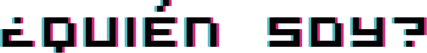

Somos una marca la cual se encarga de te mires fachero utilizando nuestros productos. Te agregamos el numero o nombre a tus uniformes para tu equipo deportivo, o si buscas una camisa para salir o verte algo más casual también la encuentras aquí, se imprimen tus personajes favoritos o alguna frase solo contáctanos y has tu pedido.
Para una mejor observación del producto principal que es la playera, se recomienda que descargue la aplicación “Augment” y escanee el siguiente código QR.